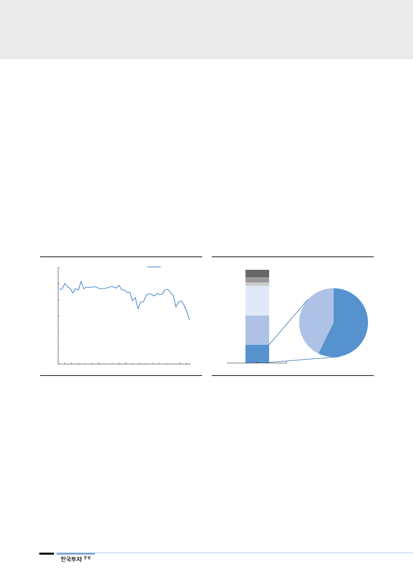

한국전력(015760)
II. 원전 이용률 회복 시작
원전 이용률 50% 밑으로
1. 원전 이용률 급락
2000년대 90%를 웃돌던 원전 이용률은 지난해 71.3%까지 떨어지더니, 지난 3
월 초 50% 밑으로 급락했다. 한전 역사상 가장 낮은 수치다. 그 이유는 일반적으
로 1∼3개월 정도 소요되던 원전 계획예방정비가 지난해부터 원자력안전위원회
(원안위)의 안전검사가 강화되면서 1년 이상 정비를 하는 원전이 속출하고 있기
때문이다. 참고로 원전 계획예방정비는 핵연료를 교체하는 시점에 진행되며 일반
적으로 18개월 주기다.
정지 원전 10기
총 설비용량의 8%에 달해
현재 정지 상태에서 정비/보수 및 점검을 받고 있는 원전은 전체 24기 중 10기
다. 가동 불능상태에 놓인 원전의 설비용량은 9.6GW로, 총 원전 설비용량의
43%, 그리고 우리나라 발전설비용량의 약 8%에 달한다.
[그림 3] 원전이용률 추이
(%)
120
원전 이용률
100
80
60
55.2
40
20
0
1Q06 2Q07 3Q08 4Q09 1Q11 2Q12 3Q13 4Q14 1Q16 2Q17
자료: 한국수력원자력, 한국투자증권
[그림 4] 정지 원전은 우리나라 총 설비용량의 8.3%
(%)
신재생, 7.9
수력, 5.6
유류, 3.6
(MW)
LNG
32.1
석탄
31.5
정지중
9,629
가동중
12,900
원전
19.3
연료원별 설비용량 비중
자료: 한국수력원자력, 한국투자증권
4